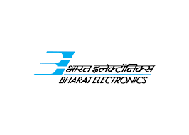

Deputy Engineer
Company:-Bharat Electronics Limited
April 2018 – April 2020

.....................................................................
Work Experience:
- Part of System level design of IAM MK-2(Integrated Avionics Module MK-2) Team, Responsible for link budget calculation, component selection, schematic modification based on requirement.
- Development and Testing of 70kW- C Band High Power Transmitter:- RF power amplification occurs in two stages. Solid state based driver amplifier which provides necessary minimum required power (more than 27dBm) to high gain TWT VTC 5765A3 based final stage which fulfill transmitter power requirement of 70kW (78dBm).
- Testing of CGU(Command Guidance Unit) consisting of X-band Receiver, C-band Transmitter and external LNA